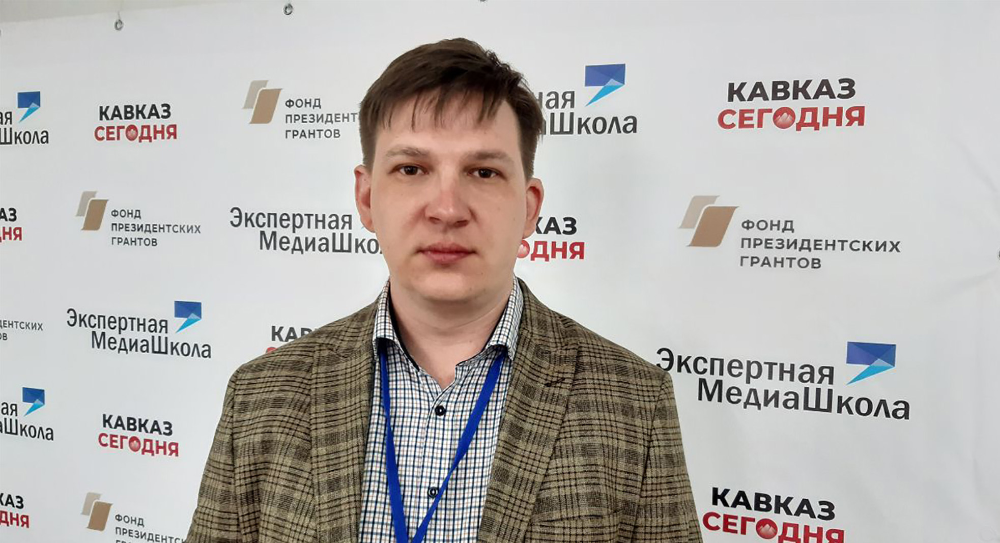

«Экспертная Медиашкола» готовит специалистов для соцсетей
Молодые журналисты, политологи и блогеры из всех субъектов СКФО примут участие в лекциях, экспертных сессиях и командообразующих мероприятиях
Александр Карманов — руководитель II Межрегионального семинара «Экспертной Медиашколы»:
«На втором межрегиональном семинаре «Экспертной Медиашколы» знакомим участников с последними тенденциями в сегменте соцсетей. Учим выявлять фейковые сообщения и разъясняем методику борьбы с ними. Практикуем единый стандарт работы в интернете.
В результате нашего мероприятия мы хотим получить специалистов для медийного рынка СКФО, которые совершат серьезный рывок в развитии северокавказской медиасферы. Работа с информацией, это профессия будущего. Поэтому мы работаем над будущим СКФО.
Сейчас ребята учатся, потом будет продолжение программы в режиме онлайн обучения.
У нас есть договоренность с рядом наших партнеров о том, что через 3-4 месяца, когда участники проявят себя, мы сможем трудоустроить выпускников, в том числе и в наши правительственные органы, и к нашим инфопартнерам, и в другие места, где они будут востребованы"